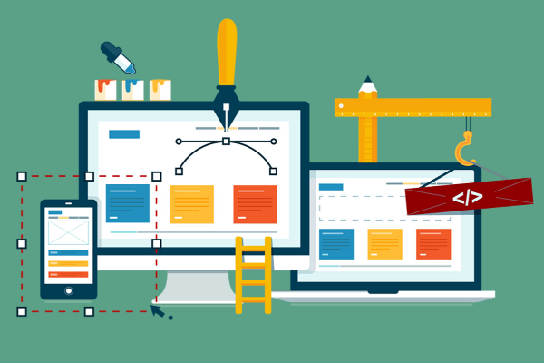

Seccion 2
Clasificacion de sitios WEB
Sin entrar en detalle, una página web podría ser perfectamente el «documento» que estás leyendo ahora
mismo, o bien la página inicial, mientras que un sitio web o «site» podríamos definirlo como un
conjunto de páginas que están relacionadas entre sí y forman parte de un dominio de Internet, en este
caso, sergioescriba.com.
Los sitios web pueden usarse para diferentes propósitos, ya sea para crear un página personal, una
página corporativa, otra donde ofreces servicios y productos, o bien un sitio dedicado al
entretenimiento o a la educación. Debido a la gran cantidad de tipos de páginas web que hay, también
existe una clasificación para poder diferenciarlos.
-
Segun su estructura
Según el contenido y la forma que se muestran las diferentes páginas podemos diferenciarlas entre estáticas y dinámicas. Cada una cuenta con una estructura que visualmente no cambia, pero el contenido que se muestra en la página si puede variar:
► Páginas web estáticas
Cuando hablamos de una página web estática nos referimos a aquellas que se crean con el lenguaje HTML y no contienen ninguna funcionalidad que permita al usuario interactuar con la página, excepto para leer el contenido.
Es una opción ideal cuando tienes un pequeño proyecto en el cual simplemente quieras informar a tus clientes con información de la empresa, productos o servicios, y sin necesidad de estar cambiando de forma constante el contenido de la web. La principal ventaja de este tipo de páginas web es la facilidad de desarrollo y lo económico que pueden llegar a ser, a diferencia de las dinámicas.
► Páginas web dinámicas
A diferencia de las estáticas, las páginas dinámicas están construidas con otros lenguajes de programación que, gracias a ellos, podemos ofrecer a los usuarios la posibilidad de cambiar el contenido, ya sea el texto, los menús o incluso las imágenes.
Al ser páginas mucho más complejas y con mayor posibilidad de desarrollo, contamos con algunas plataformas que nos facilitan esta labor. Si es el caso de que quieres crear una tienda online, una web corporativa o un blog, existen gestores de contenido (CMS) como Magento o WordPress que son los más indicados para poder realizar todas estas modificaciones.
Las posibilidades de diseño son infinitas. No obstante, debido a la complejidad que presentan este tipo de páginas y los conocimientos específicos que se necesitan, requieren de un coste muy superior para su creación.
Según la tecnología utilizada:
Existen diferentes formas de construir páginas dinámicas en función de los lenguajes de programación o algunos Software:
► En lenguaje HTML
Se trata de un lenguaje con el que casi cualquier usuario, con mínimos conocimientos de diseño, puede crear su propio sitio web sin problemas. La principal desventaja de estas páginas es que son estáticas, por lo que suelen quedarse «cortas» cuando queremos queremos ofrecer algo más que una simple página de información.
► En Flash
Gracias al uso de este Software podemos crear páginas más visuales debido a la posibilidad de crear animaciones. Estás páginas también pueden incluir efectos, sonidos e incluso movimientos, por lo que son más atractivas. Una de las desventajas que presenta este tipo de páginas hechas con Flash es lo pesadas que pueden llegar a ser, y como consecuencia, los tiempos de carga son superiores.
► En lenguaje del servidor
Se trata de la tecnología que se usa actualmente con las páginas dinámicas. Estás se crean con lenguajes de programación como PHP, ASP o Ajax y utilizan una base de datos para guardar todo el contenido de una página. Como he explicado anteriormente, las ventajas de las páginas dinámicas frente a las estáticas son muy evidentes, ya que permiten interactuar con los usuarios y además, ofrecen la posibilidad de dar mas visibilidad al sitio web mediante técnicas de marketing.
Tomado desde: https://developer.mozilla.org/es/docs/Web
Mantenimiento
El mantenimiento generalmente implica el continuo control del buen funcionamiento sobre los
archivos y estructuras de directorios de nuestro sitio Web.
El mantenimiento a un sitio pequeño puede ser de dos o tres horas por semana. En un sitio
grande, el mantenimiento puede ser un trabajo de tiempo completo. Asegúrese de incluir los
costos de mantenimiento en su presupuesto durante la fase de planeación, para que no lo tomen de
sorpresa. Si está planeando un sitio grande y ambicioso o quiere gradualmente agregar más
contenido y complejidad, trabajar con un programador o diseñador experto desde el principio
puede ahorrarle mucho tiempo y problemas más adelante. Empezar con un sitio bien diseñado es la
manera más efectiva de evitar actualizaciones y mantenimientos caros. Los desarrolladores
expertos de la Red cobran un promedio de 75 dólares por hora. Puede parecer mucho, pero el costo
lo vale si quiere incluir funciones avanzadas como animaciones en línea, formatos o herramientas
de búsqueda.

-
Hay una regla no escrita en la red que establece armar un presupuesto similar al utilizado para la creación del sitio, y dedicarlo al mantenimiento anual del mismo. Por ej. si necesitamos $100 para el diseño inicial del sitio web, dejaremos otros $100 para usar durante el resto del año en mantenimiento y alojamiento web.
Lugares prioritarios de mantenimiento.
El mantenimiento de un sitio Web es un proceso constante que se inicia después de su lanzamiento y termina cuando este es dado de baja. Si hemos puesto en marcha el sitio la siguiente pregunta que debemos formularnos es: ¿Qué partes de mi sitio requieren mantenimiento continuo?
► Mantenimiento de Enlaces.
Como los documentos HTML y sus componentes gráficos relacionados están enlazados de una manera específica, cualquier cambio o adicción que haga a documentos o directorios existentes, puede afectar la relación entre ellos. El resultado más común es que los enlaces se rompan, las imágenes se mezclen, o las páginas no se carguen adecuadamente. La retroalimentación de los usuarios, generalmente por correo electrónico, puede ser una parte importante en identificar este tipo de problemas, para que puedan ser resueltos de manera oportuna.
► Mantenimiento del Contenido.
Actualizar el sitio involucra cambiar el contenido. Esto puede ser tan fácil como controlar los enlaces a otros sitios para asegurarse de que sean válidos, o tan complejo como agregar nuevas funciones a los formatos. Los recursos y los costos para mantener un sitio moderno y en buen estado, dependen del tamaño y complejidad del sitio y qué tan seguido tiene que ser actualizado.
Recuerde que agregar nuevo contenido no significa necesariamente eliminar el viejo. Algún material viejo como comunicados de prensa, actualizaciones de programas, artículos y transcripciones de discursos pueden ser útiles a los usuarios y deberían ser archivados. Asegúrese de que la información archivada sea de fácil acceso.
Otra manera simple de informar a los usuarios que han actualizado su sitio, o algunas páginas, es agregar una notación.
► Mantenimiento del Software.
Es importante revisar los sistemas y aplicaciones basados en la Web periódicamente con respecto al manejo de información, riesgos potenciales a la seguridad, la actuación del sistema, y los modelos de uso (analizando Web logs), y tomar las medidas convenientes para arreglar el shortcom-ings y debilidades, cualquiera.
El protocolo HTTP, utilizado en la Web para la transferencia de datos a través de la red, no es lo suficientemente seguro como para transmitir datos delicados o de índole personal, como pueden ser los números de documento o de tarjeta de crédito de un particular o, determinados archivos comerciales de una empresa.
Por este motivo, se han desarrollado un par de protocolos nuevos que vienen a suplir esta falencia. Estos son el SET, desarrollado por las empresas emisoras de tarjetas de crédito y el SHTTP/SSL, del cual se encargó la empresa Netscape (la del famoso navegador).
El SHTTP/SSL es hoy día el más aceptado de los dos ya que, si bien es menos seguro que el SET, cumple con su cometido eficientemente y es mucho más fácil de implementar. Ud. notará que está utilizando un protocolo seguro cuando vea un candado cerrado en la barra de estado de su navegador IExplorer.
► Mantenimiento del Diseño
Una empresa debe mantener una imagen ante el público. Diseños frescos y modernos, para mostrar que estamos a la vanguardia y en constante búsqueda de lo actual. Un diseño que no muestre lo que es la empresa o este compuesto de elementos poco atractivos o antiguos podrían mostrar a la empresa como anticuada o intrascendente. Generalmente una imagen empresarial debe realizar un cambio cada dos años, dependiendo del tipo de empresa. Es lógico imaginar que el sitio Web debe contener elementos obtenidos de la imagen corporativa de la empresa como el logotipo, colores corporativos, etc. Sin embargo el diseño en si pude cambiarse por otro más innovador o llamativo.
“Primero, todo entra por los ojos“ y por mucho que nuestra página contenga información bien estructurada, enlaces perfectos y seguridad en los datos de alta calidad, si no tiene un diseño estético, equilibrado y de fácil entendimiento los usuarios simplemente la pasaran de largo por no entender o no encontrar el toque que les llame la atención.
Es necesario lograr que el sitio web obtenga consistencia y una imagen distintiva, mediante el uso de fondos, gráficos y logos, colores uniformes en el texto y los enlaces, barras de navegación en el mismo lugar, etc.; de la misma manera que una tienda comercial mantiene una estética única, tanto para su casa central como para sus sucursales.
Estructura y diseno de sitios WEB
La página web y su constitución Lo que define el diseño de una página web es la forma de organizar
los elementos que la componen. Hay miles de formas diferentes, pero son pocas las que funcionan y
adquieren el sentido que necesitamos para nuestro trabajo.
Básicamente, los sitios web se componen y estructuran de la siguiente manera:
-
Contenedor
Esto es lo que definimos en la regla Body o en algun div de nuestra estructura. Dentro de este contenedor estarán todos los elementos del sitio; módulos, contenidos, imágenes, etc.
Este contenedor puede tener un ancho fijo; el ancho será igual para todos los navegadores y dispositivos, o uno fluido que se adaptará al ancho de nuestra ventana. Si usamos web responsive, podemos manejarlo con CSS sin problemas.
Logotipo
Acá es dónde debemos dejar la imagen de la empresa, que identificará la marca en todo el sitio. Puede ser el logotipo de la empresa o el nombre. Al estar arriba acompañara la navegación por todo el sitio ayudando al reconocimiento de la marca.
Navegación
Que importante es la navegación y el menú que la contiene. La forma más aceptada y fácil, es el menú horizontal, que siempre tiene a mano lo más importante del sitio web.
Los menús verticales pueden usarse como complementos o sub menús, de los horizontales, y siempre cerca de la línea horizontal del menú principal y deben ser visibles en el primer pantallazo, al entrar.
Contenido
Lo más importante y fundamental de una buena página. Lo que mantiene al visitante cautivo e interesado. Si el contenido es malo o poco interesante, abandonará la página en pocos segundos. Para eso, debe estar centralizado y enfocado y a la primera vista. El mejor lugar debe ser para los contenidos. Para Google, el contenido es el rey.
Footer
Localizado al final del sitio, abajo, generalmente dejamos ahí información de Copyright y legales o menús secundarios. Aunque en los últimos años, se usa mucho para incluir información de redes sociales, direcciones, noticias.